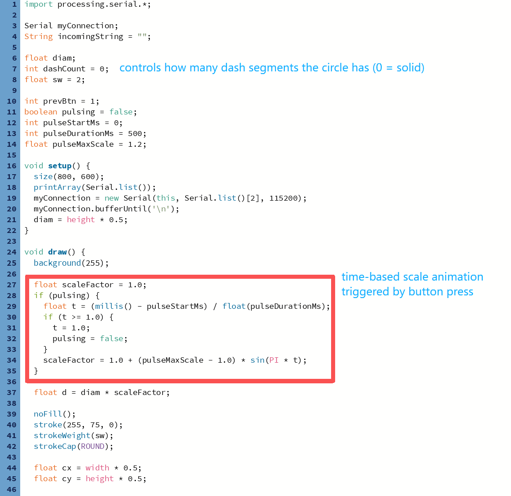
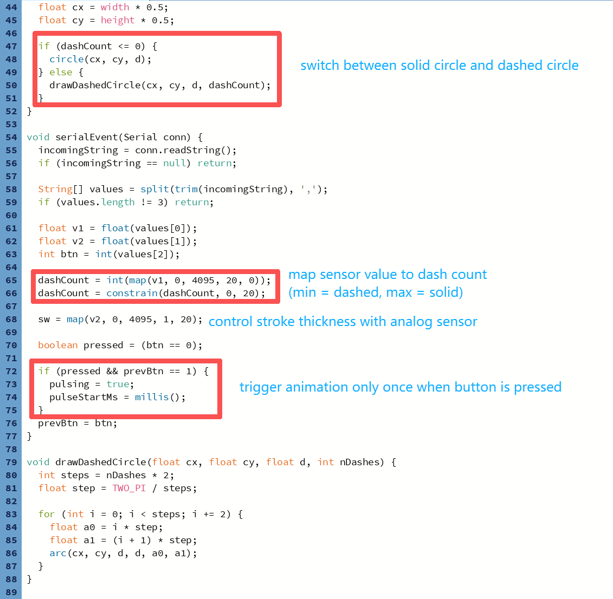

This project is based on the serial communication example from class. I started with the original code that sends two analog values and one button value from ESP32 to Processing.
At home, I modified the Processing sketch to change a filled circle into a stroked ring. One sensor value controls the number of dash segments on the ring, changing smoothly from a dashed circle to a solid one. The other sensor value controls the stroke thickness of the ring.
I also added a time-based interaction: when the button is pressed, the ring briefly scales up and then returns to its original size within 0.5 seconds. This change turns the button from a simple state switch into a trigger for animation.
Currently, the two analog sensors work as expected, but the button does not trigger the animation. This is likely caused by a hardware wiring issue on the Arduino side, not the Processing logic.

